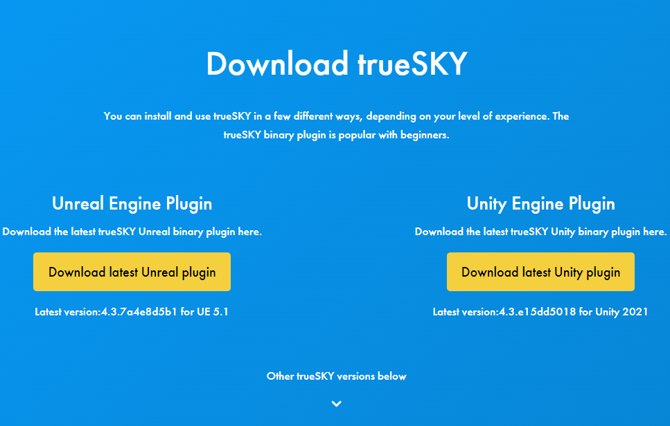

Unreal Tutorial¶
Initial Configuration¶
Please be aware trueSKY for Unreal does not support OSX and OpenGL. For Vulkan please use UE 4.22 or greater.
This page shows you how to install the binary version of trueSKY onto your existing binary UE installation. For other versions, or if you have a version of Unreal Engine built from source, you will need to build the plugin. Check the Unreal Source page for information on GitHub/Engine Source Integration.
Installing the Plugin¶
1: Login to your account at https://simul.co/account. If you have not created an account yet, head over to installation home page to get setup, as you cannot download trueSKY without an account.
2: Download the latest trueSKY plugin installer from https://simul.co/downloads. If you require a different engine version, scroll down to our archive of downloads. We always recommend the latest version of trueSKY.
3: Run the trueSKY plugin installer, ensuring that you select your Unreal project directory as the installation location. After the installation process is complete, the plugin should be installed into your project. For Unreal version before 5.0, you must instead specify the Unreal engine directory. If you make an error with the directory, the wizard will show a warning.
Running the binary plugin¶
1: Launch the Unreal project you installed the plugin into.
2: Click ‘Edit -> Plugins’ from the drop-down menu at the top of the window.
3: A new ‘Plugins’ window will appear. Use the search box to find ‘trueSKY’.
4: Make sure trueSKY is enabled with the small tick box. If it is not, enable it. This will require you to restart Unreal.
5: Once the plugin has been enabled, trueSKY is now ready to be used within the scene.
Adding trueSKY to the level¶
1: Click ‘Tools -> initialize trueSKY’ from the bottom of the drop-down menu. For Unreal versions prior to 5.0, this is located in the ‘Windows’ drop-down menu.

2: A pop-up window will appear. Please review the options and then select ‘Next’ when you are ready. You can then either click initialize to allow trueSKY to set itself up with the recommended defaults, or you can click next to customise the initialization. If you clicked initialize, you can jump to step 4.

3: Select an initial sequence asset. This can be changed at any time. There will be a list of many different presets, our recommended default preset is the ‘Cumulus’ sequence asset.
4: Select a direction light which trueSKY will control, if you do not select one then a new directional light will be created.
Once initialize is selected, you should see trueSKY appear in the scene! trueSKY is now initialized in your level, for large environments we recommend trueSKY should be within the persistent level.
Creating a new Sequence¶
1: Either select Add New at the top left of the content browser, or right click within the content window.
2: Click on “Miscellaneous -> trueSKY Sequence Asset” to create a new sequence. It can be renamed/saved/moved/deleted to your preference.

3: To make this new sequence the active sequence in the world, select trueSkySequenceActor in the outliner, then in the details section, search for ‘Active Sequence’
4: You can either manually select your sequence from the drop-down next to active sequence, or you can drag and drop your preferred sequence from the content browser to the active sequence box. You can also make a new trueSKY Sequence from this menu.

Now you are almost ready to start creating amazing environments with trueSKY, you just need to activate your license within the sequencer. Head over here to learn how.